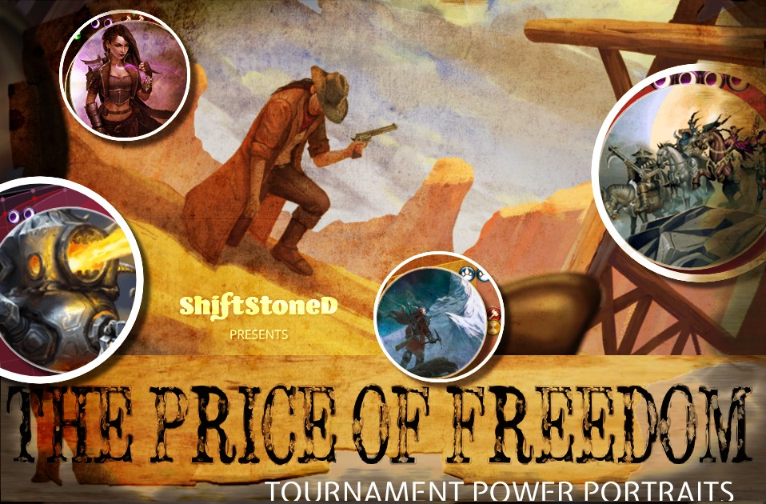
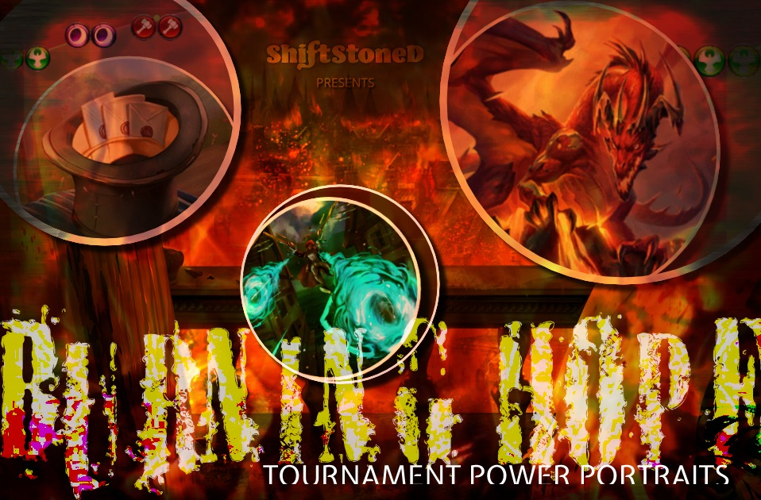
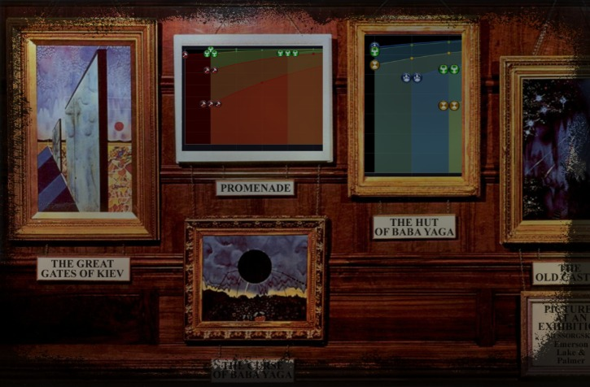
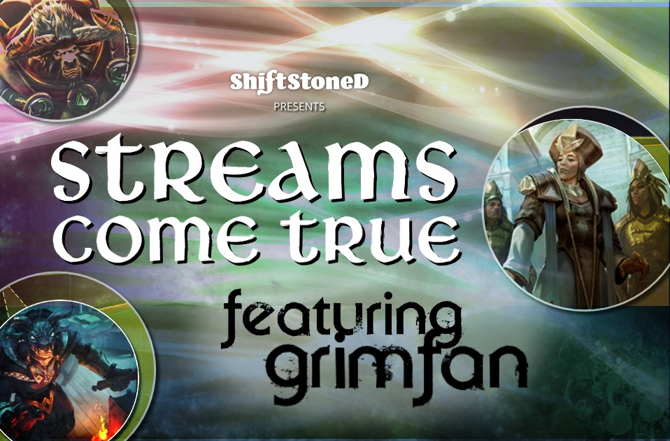
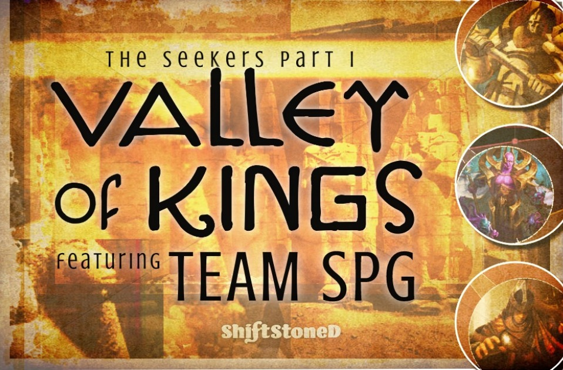
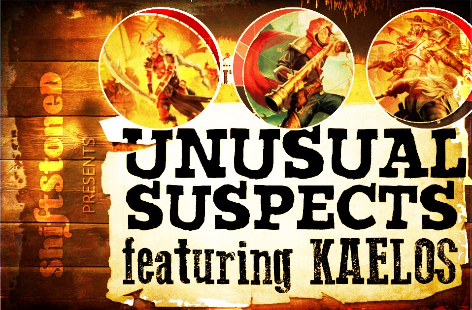
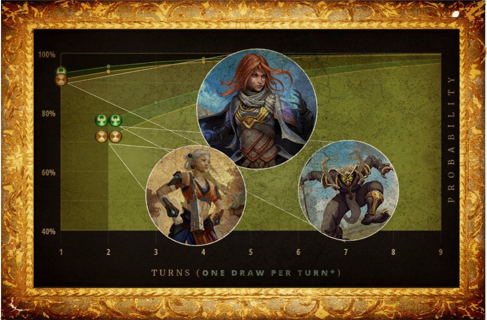

Price of Freedom: ECQ Rundown
February 14, 2019 - 🔥🌒 Underdogs, ⌛️🌒 fresh takes, and 🦅🐾🌒 rulebreakers featured in the Top 8 of Eternal Card Game’s Price of Freedom event, while🔥🦅🌒 Winchest remained a force to be reckoned with. Find out more in this Eternal Championship Qualifier rundown, featuring Power portraits and standout features for each of the finishers.
Read more ►

Burning Hope: ECQ Rundown
January 19, 2019 - Taking a closer look at the Top Eight decks from Burning Hope. Fire was featured in every one, with Winchest composing more than half of lists in both the finals and the tournament overall. Yet each of the winners built their deck differently. All of the summaries here include a standout feature describing what sets each deck apart from the others.
Read more ►

Pictures at an Exhibition
December 15, 2018 - anging this year's Championship Power bases on the wall, and introducing the Eternal Power Calculator's new title feature. We take a look at Power base visualizations for all 16 decks from the Eternal Tournament Series 2018 World Championship.
Read more ►

Streams Come True:
featuring Grimfan
September 29, 2018 - Just hours before the first-ever community qualifying event for the Eternal World Championship 2019, Grimfan tweeted out to his followers: “I've decided I'd like to stream more than I want to win.” In the end he did both, taking first place with ET Combrei Aggro and doing it all on camera..
Read more ►
 Trail Stories: PapaCapricorn
September 6, 2018 - Shiftstoned's PapaCapricorn toasts marshmallows with MantidMan as part of the Trail Stories series profiling members of the Eternal community. They cover community, story-telling and the origins of the Eternal Power Calculator in this special feature presented by Team Rankstar.
Trail Stories: PapaCapricorn
September 6, 2018 - Shiftstoned's PapaCapricorn toasts marshmallows with MantidMan as part of the Trail Stories series profiling members of the Eternal community. They cover community, story-telling and the origins of the Eternal Power Calculator in this special feature presented by Team Rankstar.
Read more at teamrankstar.com►

The Seekers I - Valley of Kings:
featuring BruisedByGod, SecondBlue and SooNo
August 26, 2018 - Team Seek Power Gaming is poised to capture several top spots in both the Eternal Tournament Series and the Eternal Community League. In this first part of a series, we talk to SPG members SooNo, BruisedByGod and SecondBlue about what it means to be a team player in Eternal..
Read more ►

Unusual Suspects :
featuring Kaelos
August 20, 2018 - Kaelos speaks with Shiftstoned about her unconventional approach to deck-building on the heels of a first-place finish in an ECL weekly event. Science, community and the healing power of games are just a few of the topics that emerge from our conversation about Power bases in Eternal.
Read more ►
 Quadragraphic: featuring camat0 August 10, 2018 - camat0 sits down with Shiftstoned to discuss the Power bases behind all four of his winning lists from the Eternal Community League's
Quadragraphic: featuring camat0 August 10, 2018 - camat0 sits down with Shiftstoned to discuss the Power bases behind all four of his winning lists from the Eternal Community League's
inaugural Sunday Challenge event. We talk Power, Crests, fixing and
the merits of Privilege of Rank.
Read more ►
 Danger: High Voltage August 3, 2018 - Over half the cards in a recent tournament-winning Combrei deck piloted by Mouche are Power sources. With help from the the Eternal Power Calculator, let's attempt to answer the question: "When is too much Power just enough?"
Danger: High Voltage August 3, 2018 - Over half the cards in a recent tournament-winning Combrei deck piloted by Mouche are Power sources. With help from the the Eternal Power Calculator, let's attempt to answer the question: "When is too much Power just enough?"
Read more ►
 A Tale of Two Power Bases July 27, 2018 - Two distinct and innovative archetypes prevailed at recent Eternal competitive events. Tobboo's Rakano Valkyries showcases a new breed of Midrange Rakano, while Isochron's Adapted Green Feln presents a fresh take on J/PS Control. Let's take a look at their power bases using the Eternal Power Calculator...
A Tale of Two Power Bases July 27, 2018 - Two distinct and innovative archetypes prevailed at recent Eternal competitive events. Tobboo's Rakano Valkyries showcases a new breed of Midrange Rakano, while Isochron's Adapted Green Feln presents a fresh take on J/PS Control. Let's take a look at their power bases using the Eternal Power Calculator...
Read more ►
 Portrait of the Eternal power base as first-place Saturday Challenge finisher
July 16, 2018 - Nishava took first place at the inaugural Kaelari's Saturday Challenge event with an aggressive Combrei list entitled Rakano's weapons are outmatched! Let's take a look at the power base using the Eternal Power Calculator...
Read more ►